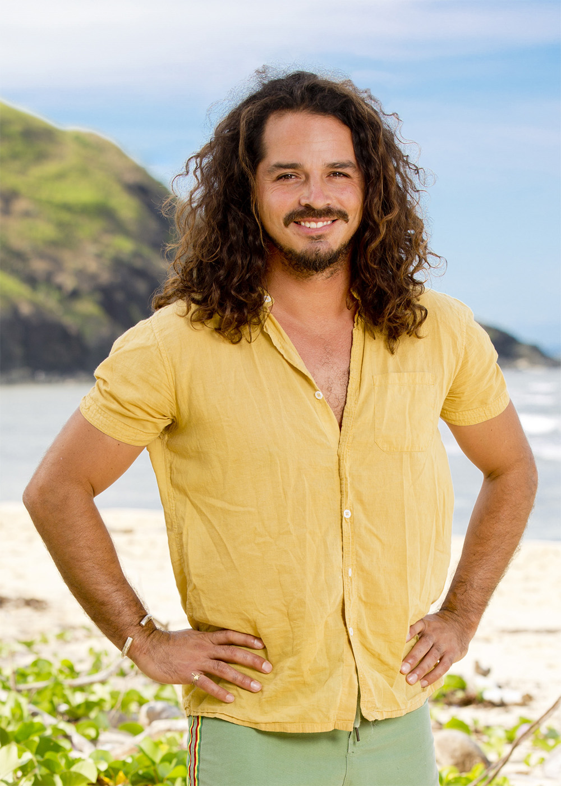
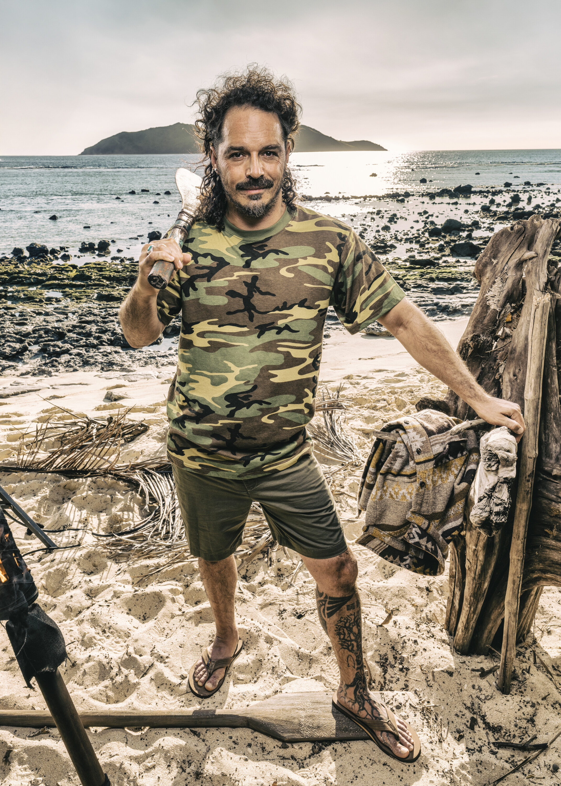

Ozzy Lusth


Episode 1
Ozzy dominated the supply challenge but lost to Coach, returning to camp empty-handed. On Exile Island, he convinced Q to trade his vote for camp supplies while Ozzy took the Extra Vote advantage. Genevieve (Vatu) found the Boomerang Idol and sent it to Ozzy, believing he'd be arrogant enough not to play it. Ozzy thinks it's a regular gifted idol. He cannot give it away and must play it on himself. He strongly defended Cirie at camp, pushing against Jenna's campaign.
Advantages
- Extra Vote — Gained through trade with Q on Exile Island.
- Boomerang Idol — Gifted by Genevieve (Vatu). Good through Final 5. Cannot give away, must play on himself. If voted out with it, it returns to Genevieve. Ozzy does NOT know it's a boomerang.
Alliances
Ride-or-die with Cirie Fields. Multiple players (Joe, Savannah, Emily, Rick) have discussed targeting him. The pair is seen as dangerous and Ozzy is advantage-heavy.
About
Ozzy Lusth is one of the most physically dominant players in Survivor history. His challenge prowess is legendary — from climbing trees to catch fish to dominating immunity runs. He finished as runner-up on Cook Islands and 4th on South Pacific but has never won the title of Sole Survivor. Now the owner of a music venue, tiki bar, and restaurant called Xolazul, Ozzy returns for a record-tying fifth time.